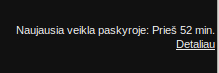

Šiame puslapyje yra pateikiama informacija, ką daryti, jei įtariate, kad į Jūsų GMail buvo bandoma įsilaužti. Taip pat, kaip galima būtų sumažinti tokio įsilaužimo tikimybę arba jo padarytą žalą.
Visada prieš jungdamiesi prie Gmail įsitikinkite, ar naudojamas saugus ryšys. Daugumoje naršyklių prie adreso turi būti spynelė, ant kurios paspaudus išlenda užrašas: „Jūs prisijungėte prie svetainės google.com … Tai liudija: Google Inc“. Pavyzdys, kaip tai atrodo Firefox:
Nusistatykite, kad visada ryšys su Gmail būtų šifruojamas. Tai galite padaryti nuėję į nustatymu (dantratis → „Nustatymai“) ir kortelėje „Bendras“ prie „Naršyklės prijungimas:“ pasirinkę „Visada naudoti https“:
Baigdami darbą visada tvarkingai atsijunkite nuo pašto. Paspauskite ant savo vardo ir pavardės viršutiniame dešiniajame kampe, o tada pasirinkite „Atsijungti“. Vien uždaryti naršyklę nepakanka, nes nėra sunaikinama sesija serverio pusėje ir piktavaliai gali toliau ja naudotis.
Reguliariai keisdami slaptažodį sumažinate tikimybę, kad jį gavę piktavaliai spės padaryti ką nors blogo. GMail paskyros slaptažodį galite pasikeisti nuėję šiuo adresu: https://security.google.com/settings/security , skiltyje „Slaptažodis“.
Slaptažodis turėtų būti bent 8 simbolių ilgio ir jame turėtų būti bent po vieną: skaičių, mažąją raidę, didžiąją raidę ir skyrybos ženklą.
Tam, kad galėtumėte atkurti prieigą prie prarastos GMail paskyros turite nuolat atnaujinti atkūrimo parinktis. Tai galite padaryti nuėję į puslapį https://security.google.com/settings/security , skiltyje „Atkūrimo parinktys“.
GMail stebi ar Jūsų paskyroje nevyksta neįprasta veikla ir aptikę tokią veiklą Jums gali apie tai pranešti atsiųsdami SMS žinutę į Jūsų telefoną. Šią funkciją galite aktyvuoti puslapyje https://security.google.com/settings/security , skiltyje „Pranešimai“.
Patvirtinimas dviem veiksmais suteikia antro lygio apsaugą Jūsų GMail paskyrai (pirmo lygio apsauga yra slaptažodis). Aprašymą, kaip jį aktyvuoti, galite rasti čia.
Aktyvavę patvirtinimą dviem veiksmais nepamirškite reguliariai peržiūrėti konkrečioms programoms suteiktų slaptažodžių sąrašą ir iš jo pašalinti jau nebenaudojamas programas.
Beje, patvirtinimą dviem veiksmais taip pat palaiko ir facebook bei „Microsoft“ paskyra.
Tam, kad Jums nereikėtų kiekvienoje svetainėje įvedinėti informacijos apie save kiekvieną kartą iš naujo, Google suteikia galimybę Jums leisti svetainėms ir programoms prieiti prie Jūsų paskyros duomenų. Sužinoti, kokioms svetainėms ir programoms esate suteikę prieigą, galite puslapyje https://security.google.com/settings/security , skiltyje „Prijungtos programos ir svetainės“.
Jei nesinaudojate laiškų persiuntimu, POP3 ir IMAP funkcijomis, jas turėtumėte išjungti. Tai galite padaryti nuėję į elektroninio pašto nustatymus (dantratis → „Nustatymai“) ir skiltyje „Persiuntimas ir POP/IMAP“:
Google neįprastos veiklos stebėjimo algoritmas gali atpažinti, kad vyksta kažkas ne taip, jei prie tos pačios paskyros yra prisijungiama panašiu laiku iš skirtingų geografinių vietų. Pavyzdžiui, jei yra užfiksuojama, kad kažkas prisijungė prie paskyros iš Vilniaus, o po kelių valandų iš Miuncheno, tai Google greičiausiai praneš apie neįprastą veiklą. Tačiau, jei abu kartus bus prisijungta iš Lietuvos, tai Google tai atrodys normalu.
Siekdami laiku pastebėti, kad kas nors kitas prisijungė prie Jūsų paskyros, turėtumėte reguliariai stebėti paskyros „Aktyvumo informaciją“. Ją galite pamatyti prisijungę prie savo pašto ir apatiniame dešiniajame puslapio kampe paspaudę ant „Naujausia veikla paskyroje: … Detaliau“:
Paspaudus ant nuorodos turėtų atidaryti tokį puslapį:
Jeigu prie pašto visada jungiatės tik namie, tai IP adresas visur turėtų būti tas pats. Taip pat paspaudę ant „Rodyti išsamią informaciją“ turėtumėte pamatyti kliento aprašymą, atitinkantį Jūsų naudojamą programinę įrangą.
Pastaba: Jeigu į Jūsų paskyrą buvo įsilaužta, ši informacija yra itin svarbi informatikui, kuris bandys išsiaiškinti, kas atsitiko. Ją galite išsisaugoti savo kompiuteryje tiesiog pasirinkę „Failas“ → „Įrašyti kaip…“ iš naršyklės meniu. (Naršyklės meniu, jei jis nėra rodomas, paprastai galima atverti spustelėjus kairįjį „Alt“ klavišą.)
Jeigu įtariate, kad į Jūsų GMail buvo įsilaužta, turėtumėte atlikti šiuos veiksmus:
Susisiekite su pažįstamu informatiku, kad padėtų pašalinti problemos priežastis. Tyrimui dažniausiai yra labai naudinga turėti tokią informaciją:
Pastaba: Jei atsidarėte įtartiną laišką, tai būtų gerai, jei išsisaugotumėte to laiško „originalą“:
Vėliau, jei paaiškės, kad Jūsų kompiuteris buvo apkrėstas tame laiške esančiu virusu, laiško „originalas“ gali labai praversti aiškinantis viruso veikimo principus.
Jeigu įtariate, kad į kieno nors kito GMail buvo įsilaužta, tai turėtumėte tam asmeniui apie tai pranešti naudodamiesi kitais kanalais (pavyzdžiui, telefonu arba per Facebook). Taip pat, jei įtariate, kad buvo įsilaužta į kieno nors, turinčio prieigą prie NMA IT servisų, paskyrą, turite apie tai pranešti NMA IT administratoriams Vytautui ir Aleksui.